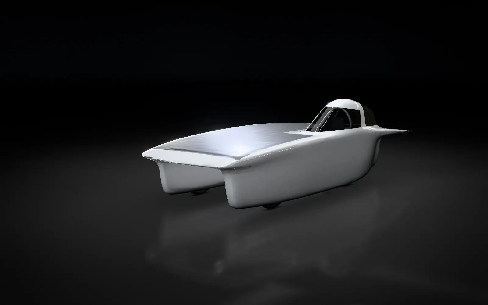

A lighter foundation.
Chassis & Structures
Our carbon-fiber monocoque combines the body and structural chassis. Composite layups, impact protection, packaging requirements, and structural analysis balance low mass with strength.

Introducing
Rice’s debut into solar racing
A student-built solar racecar built to get the most performance out of every watt. We’re bringing lightweight structures, efficient propulsion, and race strategy together for Formula Sun Grand Prix 2027.
01 The energy path
The solar array converts sunlight into electrical power.
The battery buffers energy as sunlight and demand change.
The inverter controls a hub motor that drives a rear wheel.
Telemetry and models help us choose an efficient pace based on the competition and current conditions.
02 Inside Carrera
A lighter foundation.
Our carbon-fiber monocoque combines the body and structural chassis. Composite layups, impact protection, packaging requirements, and structural analysis balance low mass with strength.

Capture. Store. Deploy.
A 1000 W solar array feeds a custom battery system in development. Our silicon-anode pack maximizes the amount of energy we can store and utilize alongside battery monitoring, protection circuitry, and thermal management systems.

Max per watt
A hub motor and efficient inverter turn stored energy into propulsion. Integrating the motor directly into a rear wheel keeps the drive path compact and reduces complexity and the majority of mechanical parasitic losses.

Control through the corners.
Our design pairs semi double-wishbone front suspension with a rear swing arm. Steering, low rolling resistance tires, and four-wheel disc braking support handling and efficient laps.

Power where it’s needed.
High-voltage and low-voltage systems connect the battery, motor controller, lights, and electronics. Custom boards and protection circuits are being developed for dependable operation.

Data-driven racing
Microcontrollers, a driver dashboard, and telemetry bring vehicle data to the driver and team. The illustrative telemetry plot shows the signals we’re working to connect to testing and race decisions.
Timeline

03 Our strategy
Our goal is to use all available energy but no more and no less. Thorough analysis and testing help us set a pace we can sustain and our drivers and strategy team adjust to racing conditions to make sure every last watt-hour from sunlight is spent on track before the race ends.
Estimate how speed, aerodynamic drag, and rolling resistance affect energy use.
Compare model predictions with measured power, speed, and battery behavior.
Use sunlight, available energy, and track conditions to inform race strategy.
04 The next milestone
Our goal is to prepare Carrera for FSGP 2027: a closed-course endurance competition where solar cars aim to complete the most laps. Reliability, energy management, and teamwork matter as much as speed.
The organizer’s general format is three eight-hour race days. Entry depends on completing the required technical and safety checks.


05 Car FAQs
Curious about the car or how to help build it?
That’s what the battery is for: the battery stores energy collected by the array, so the motor does not depend on direct sunlight at every moment.
About 70–80 mph according to aerodynamic simulations and our motor’s characteristics. Another important way of looking at it is “how fast can it go on solar power alone?” We’re hoping for that to be >35 mph during testing.
A monocoque combines both the vehicle’s aerodynamic shell and structural chassis as a load-bearing structure. It’s enabled by carbon fiber composites that can be formed into an aerodynamic shape using molds. Similar to Formula 1 and hypercars, Carrera’s carbon-fiber design helps reduce mass while supporting the systems inside.
With on-track wheel-to-wheel racing, drivers will be competing on real race circuits, overtaking opponents, and maximizing their use of energy to defend their position while also getting to know the car during our testing phase. Understanding racing strategy like following the racing line and applying power at just the right moment after a corner exit actually goes hand in hand with maximizing efficiency. Interested in driving?
Formula Sun Grand Prix (FSGP) is the track event and serves as the qualifier for the American Solar Challenge (ASC), the cross-country endurance event which will be held in 2028. We’re optimizing our car for track racing in 2027, and planning to use what we learn to upgrade it for cross-country racing in 2028.